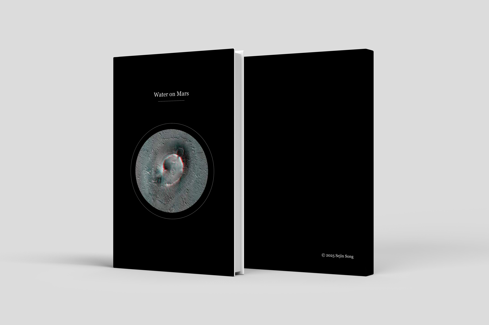

Water on Mars
An editorial book design exploring the presence, history, and visual evidence of water on Mars through image sequencing, contrast, and structured layout. The project explores how scientific imagery and data can be translated into a visual narrative. Through sequencing, scale, and composition, the book creates a sense of progression and emphasizes the vastness and uncertainty of Mars.
Selected Views


Concept
The project uses a restrained black-and-white palette, spacious margins, and high-contrast spreads to create a sense of distance, scale, and scientific clarity. Images are treated as both evidence and atmosphere. Through pacing, chapter transitions, and compositional shifts, the book moves between data, speculation, and visual immersion, framing Mars as a landscape of imagination.
Overview Video